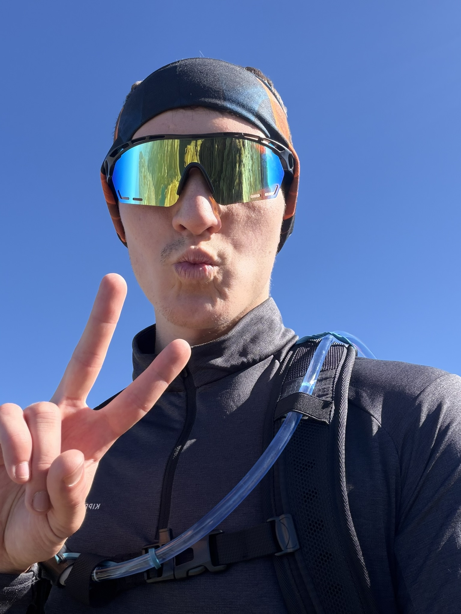

NĚCO MÁLO O MNĚ
Kam až mě hory zavedou?
Říkají mi Honzo nebo Jane 😁. V roce 2026 jsem se začal víc toulat po horách a postupně objevovat, kolik krásných míst se dá pěšky poznat.
Mým cílem je pomalu projít celé Tatry. Potom bych se chtěl přesunout do rakouských Alp a postupně poznávat i ty, až se jednou dostanu ke svému velkému cíli – zdolat Mont Blanc.
Jak daleko dojdu a co všechno se mi podaří, to se teprve uvidí. 😁 Každopádně tohle je teprve začátek a MyHikingDiary bude místo, kde si budu všechny tyhle výpravy a zážitky ukládat.
